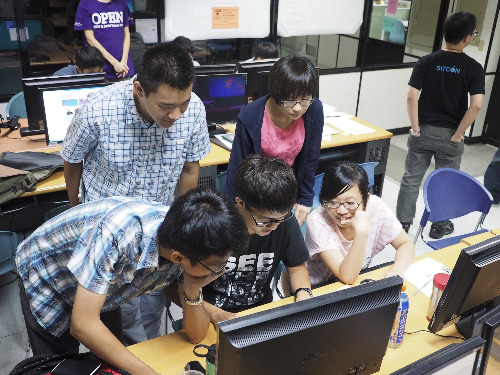

也紀念我們永遠的朋友 李士傑先生（Shih-Chieh Ilya Li）。
| ■ [技術專欄] 第一次用 PHPUnit 寫測試就上手（上） | |
| ■ [法律專欄] 自由開源商用產品面對第三人專利問題的應對之方 | |
| ■ [源碼新聞] 來自開放糧食開發者的古老訊息 | |
| ■ [源碼新聞] 自由軟體校園演講 - 103 學年度第 2 學期申請 | |
| ■ [源碼新聞] SITCON HACKGEN 2015 is Coming ! | |
| ■ [源碼新聞] 2015 年一月份社群活動列表 | |
| 技術專欄 | |
| 第一次用 PHPUnit 寫測試就上手（上） | |
| 作者 黃儀銘／文 | |
一、什麼是測試？測試的重要性？開發者在撰寫程式的時候，程式不大可能會沒有問題，所以通常就需要驗證程式的執行是不是符合預期。測試程式能用來驗證程式程式的運作是不是正常的，並發現程式中的錯誤，以增加軟體品質。 下面是一個活動報名的系統： |
|
| 閱讀全文 | |
| 回目錄 | |
| 法律專欄 | |
| 自由開源商用產品面對第三人專利問題的應對之方 | |
| 作者 葛冬梅、林誠夏 | |
|
在自由開源軟體的商業應用過程中，軟體專利侵權的潛在風險一直是個受到矚目的議題，因為依各國著作權法及電腦程式保護專法的規定，著作權性質的保謢標的多是限定在著作的表現形式上，故而重新撰寫且完全不抄襲他人的程式碼，將有機會主張新創作的程式，是一個全新的創作，而不受到他人既定程式的著作權利拘束，這也是 GNU 計畫 (GNU Project: GNU is Not Unix) 當初設立起步的主要思維：透過群策群力的方式，不加抄襲但重新創作具 Unix 系統所有功能的全新電腦作業系統，來讓後續的應用不受到既定 Unix 作業系統的拘束；然而在專利權的領域裡，因為其保護的標的多為抽象，且可實施在不同載體的技術方法和步驟，故第三人專利的議題在自由開源商用領域可能引發的效應，往往讓商業使用者憂心，畢竟，自由開源軟體專案允許多人共工的模式，一方面確實是加速了軟體專案的開發效率與期程，然而，開發流程裡是不是有開發者誤用或因疏忽寫入第三人既存，且受軟體專利保護的演算法，而讓整體專案後續曝露在專利侵權的風險下，這方面的推論，理論上亦有可能成真。 |
|
| 閱讀全文 | |
| 回目錄 | |
| 源碼新聞 | |
| 來自開放糧食開發者的古老訊息 | |
| 作者 四貓／翻譯 | |
|
本文翻譯自 Opensource.com，原作者是 Sumana Harihareswara Feed和 Alex Bayley 合著而成：https://opensource.com/life/14/11/growstuff-open-source-food
Growstuff 是一個開源的作物資料庫專案，資料來自於種植者的知識，由群眾外包提供下列資訊，包含誰種了什麼樣的作物、種植的時間與地點，以及他們打算怎麼樣收穫。你可以在 Github 上找到專案頁面。
|
|
| 閱讀全文 | |
| 回目錄 | |

| 源碼新聞 | |
| 自由軟體校園演講 - 103 學年度第 2 學期申請 | |
| 作者 OSSF 電子報團隊／整理 | |
|
雖然寫了很多程式，但還是常常覺得自己的程式碼很髒？本學年自由軟體鑄造場帶來「提升程式碼品質」的系列課程，加速同學在開發上的進步！另外還有身為軟體開發者一定要了解的開源軟體法規、授權議題也一併推薦給您！ 除此之外，還有精彩的 Maker 自造工作坊，以及開放知識時代一定要會的維基百科編輯術等著大家來發掘！ |
|
| 閱讀全文 | |
| 回目錄 | |
| 源碼新聞 | |
| SITCON HACKGEN 2015 is Coming ! | |
| 作者 SITCON 學生計算機年會／文 | |
|
在求學的過程中，可曾否想過課堂所上的一切，究竟能在哪發揮？ SITCON（Students' Information Technology Conference, 學生計算機年會）是自 2013 年由一群學生自主性地發起，以在學學生為主體的學生社群。秉持 Open Source、創新與實作的理念，以自發性的學習為基礎，延續 SITCON 學生計算機年會的理念，展開了一系列的活動。  |
|
| 閱讀全文 | |
| 回目錄 | |
| 源碼新聞 | |
| 2015 年一月份社群活動列表 | |
| 作者 OSSF 電子報團隊／整理 | |
|
祝各位新的一年事事如意！明年一月份的活動列表出爐囉！有興趣的朋友們請多多邀請您的朋友們一同前往參與！另外，由於活動列表出來的時間比較早，若後續有活動希望也能一起做宣傳的朋友們，請記得來信告訴我們喔！信箱： ossfepaper@openfoundry.org 。 |
|
| 閱讀全文 | |
| 回目錄 | |
專欄總覽


E-Mail：contact@openfoundry.org Address：台北市南港區研究院路2段128號 中央研究院資訊科學研究所 . 隱私權條款. 使用條款